此篇包含相关武器动画所涉及的内容请参考修改资料-数据-武器动画-武器动画详解
VROM即图像数据，这个我在修改心得-修改流程建议中提到了，图像数据是制作改版首先需要做的涉及ROM更改的工作，其中机体图像、机体碎片图像、武器动画图像是首先需要的导入的部分，也是对于整个游戏来说VROM中最为核心和关键的。首先我说明一下，如果一个机体为小型机，即机体图像占用的空间不能超过8*8的矩阵。如下图高达所示
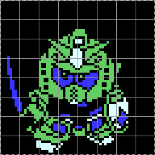
如果机体图像占用的空间大于64格，那么就需要两个图库去容纳，此时我们将它称之为大型机，如下图巴尔西昂所示
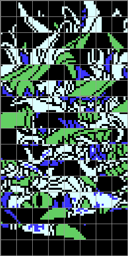
在对下面内容进行说明之前我先概述一下机体图像和相应的拼图代码之间的关系。上面我们也看到了。高达显示的是完整的图像，但是巴尔西昂显示确是杂乱无章的图像。为何要这么做？为什么不直接把完整的机体导入呢？原因很简单，因为一个机体最多占用两个图库，也就是8*16=128格，不能超过这个限制。所以为了能使机体图像顺利地导入，需要将机体拆散，然后再进行拼图，这个拼图就是要拼图代码来实现。拼图代码的作用就是一个拼图算法，就是将杂乱无章的机体图像按照游戏系统设定的逻辑用代码来重新组合起来在游戏中正确的显示。关于拼图代码请参考修改资料-数据-机体拼图。了解了这个以后，我再说明一下机体图像导入和拼图代码之间的另一个关系。FC第二次机器人大战的VROM图像只有256KB，也就是256个图库，而PROM（程序和其他参数数据）也是256KB，扩容版是512KB.对于扩容版来说，VROM要导入的图像数据相当之多，包括地图数据、机体数据、武器动画数据、人物数据、大地图数据、图标数据等。而拼图代码等组合图像的代码在PROM中只占用了小小的一部分。所以我们根据木桶短板原理，对限制性大的一方进行优先考虑，也就是优先考虑图像空间，尽可能的使图像空间得到最大化利用。所以我们导入机体图像的原则就是尽可能的不留空余，像上述高达在VROM中的情况肯定是不允许的，我们也要将其拆散，然后再用拼图代码将其组合成我们需要的游戏中实际显示的图像，如下图所示，经过重新拆散，然后导入，高达的图像只占据了这一小部分
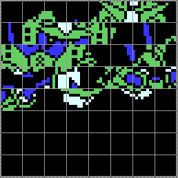
说到这里，我再说明一个细节问题，相信很多人也观察到了，机体图像的第一个格子至始至终没有机体图块，为何不添加图块？因为在战斗过程中背景黑色图块的取图是取机体图块的第一格的，如果机体图像第一个图块有数据，那么背景就会全会变成这个图块。
关于机体导图的原则我已经介绍完毕，总结一下就是尽可能多的利用图像空间，利用拼图代码来实现实际图像效果。对于一个机体而言，这个就是主体部分，作为一个完整的机体，还缺少碎片。为何要使用碎片将机体分为两部分？因为NES这个机种本身的限制，颜色位深度只有两位，也就是一个像素点不包括底色黑色在内只能实现3种颜色，为了机体看起来更绚丽，就需要碎片的点缀了。碎片的颜色也是3色，那么整个机体就可以呈现出6种颜色。
在游戏中的实际效果就是下图所示，一共为白、红、黄、蓝、深蓝五种颜色，其中蓝色为碎片部分，这里高达的碎片只使用了这两种颜色。
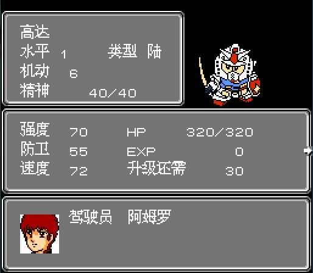
接下�砦颐蔷涂纯椿�体的碎片部分，下图所示的就是高达的碎片了，就是效果图中蓝、深蓝部分的图像，从箭头所指的图块开始，一共为6个图块。
一开始说到了首先需要导入的是机体图像、机体碎片图像、武器动画图像的数据，那么这个武器动画图像为何也要一并导入呢？出于nes本身的限制，对于mapper4(MMC3)以及其相关的变种mapper（机战是mapper74和mapper194），FC机战所使用的切页方式（具体参考修改资料-反汇编相关-mapper说明-mapper4(MMC3)-操作说明中的内容）只允许一次性切换两个精灵图库，这个就导致了每次切换的精灵图像数据必须是完整的两个图库（其中我方两个，敌方两个），这个时候就需要将我方相关的所涉及到的精灵图像数据放在一起（也就是相邻的两个图库）。所以我们可以看到高达使用的涉及到精灵图像的图像数据（光剑和光束枪的爆点动画的贴图）也在碎片图像所在的图库，就是一开始的三行所包含的图像数据。出于这个限制性问题，所有机体的碎片图像和相关的武器动画（精灵部分）图像我们需要将其贴在一起。对于单个机体而言，只是很容易做到的，但是做一个完整的改版就需要全局考虑，实际中我们在这样两个图库中导入的是多个机体包含的各自所有碎片和武器动画精灵部分的贴图。
=============================================================================================
以上内容是对单个机体图像数据导入的原则，因为是做完整的改版，基于以上原则，我们需要拟定一个以图像数据空间利用最大化为原则的图像数据导入方案。根据我以往的经验，建议按以下步骤进行导入。
1.机体图像主体部分的导入
机体图像导入的原则我在上面已经进行过详细说明，将机体拆散然后通过拼图代码组合的方式来使这部分图像空间得到最大化利用。那么现在出现了一个问题，此图库剩余空间该如何处理？为了按照步骤的逻辑进行讲解，这个我就放在下面进行说明。
2.机体碎片图像和武器动画图像的共同导入
这部分的导入原则在上面也已经进行过概述，原则性问题就是单一机体碎片图像和武器动画图像（精灵部分）导入图库的一次性。为了让相应的两个图库得到最大化利用，我们将若干的机体相关的图像数据全部导入两个图库，尽量不留剩余空间。因为多个机体的碎片图像部分肯定不不能通用的。但是武器动画部分有可能有通用的，所以我们应当优先考虑将拥有相同武器动画贴图的几个机体的相关图像数据放在相同的两个图库以此来节省图像空间。还是拿高达这个机体的碎片所在的图库来说，这两个图库包含了多个机体的碎片和武器动画，并且遵循了我上面所述的两个原则（1.这两个图库剩余空图库的数量仅仅为两个图块；2.多个机体使用同一武器动画【光剑、光束枪】，节省了相当大的一部分图像空间）
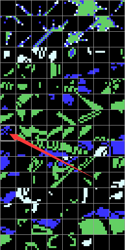
对于整个游戏ROM，机体的数量大约在100个左右，也就是说暂时先撇开机体的主题图像部分不管（这个遵循中间不留空余图块的原则即可），对于所有机体碎片和武器动画（精灵部分）我们需要在一开始进行规划，遵循不留空图块和公用武器动画的机体相关图像数据贴在一起的原则，以最少的图库数量将所有机体包含的机体碎片和武器动画图像数据全部导入。至此，机体相关的主体图像部分、机体碎片和武器动画图像（精灵部分）的所有图像数据我们已经导入完毕。
3.机体背景武器图像数据的导入
为了使得图像数据的导入更具逻辑性和关联性，在完成了上述图像数据导入之后，我们紧接着将导入所有机体相关的背景武器动画相关的图像数据。对于扩容版（时空之影、钢铁之魂）来说，在解决了大型机相遇花屏的问题之后，在背景武器动画图像数据导入的时候我们需要关注一个细节，也是重点。对于大型机而言，机体所有拥有的背景武器动画的贴图必须和机体主体部分图像的贴图必须在同一图库（关于这个原因请参考修改资料-数据-武器动画-武器动画详解-解决大型机相遇花屏相关事宜），对于第一个步骤所涉及的问题（剩余图像空间的利用）我们在这里得到了其中一个解释。接下�砜匆桓鐾际荆�
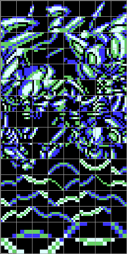
这是时空之影中的机体幻之樱机体主体图像部分和其使用的背景武器动画（捣碎机、螺旋粉碎机）相关的图像数据，我们可以看到所有的图像数据刚刚好占据了两个完整的图库。这对于在完整机体主体部分图像的贴图之后对于剩余空间的利用。所以大型机必须这样做（将机体主体部分图像与使用的背景武器动画图像数据放在一起），小型机不用考虑。当然，对于没有解决大型机相遇花屏的原版来说不用考虑这个背景武器动画图像贴图的问题。接下�砦颐蔷徒步庖幌露杂谝话闱榭龆�言机体背景武器动画图像导入的原则。以重高达为例，所拥有的背景武器动画为激光剑，所在图库如下图所示。
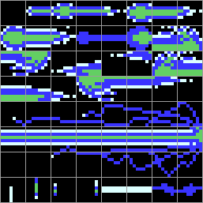
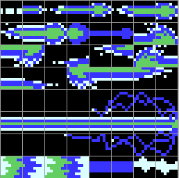
激光剑所在的图像位置为第一个图库的第三行开始，第六和第七个图块，第四行的所有图块，一共为10个图块。第二个图库相同位置的10个图块。对于这部分，需要懂得背景动画的原理才能理解这里我就不重复阐述了，具体请参考修改资料-数据-武器动画-武器动画详解-其他细节注意。因为背景武器动画的原理是动态切换图库，所以需要两帧图片的贴图在相同位置，所以对于这部分含两帧及以上的背景武器动画而言贴图原则就是每一帧的图片都要在每个图库一样的位置，这样才能保证武器动画执行的时候不出错。对于光束枪之类的背景武器动画而言，因为背景部分只有一帧，也就是说涉及的图像信息只有一帧，就不需要遵循这个原则了。到这利为止机体背景武器动画的导入原则也已经讲解完毕，与第二步需要遵循的原则一样，尽量每个图库不留空图块（综合考虑所有背景武器的贴图，将他们规划整合，以最少的图库数量来容纳它们）。对于第一个步骤遗留下来的问题，在导入机体背景武器动画的时候可以得到相应解决，就是像对于解决大型机相遇花屏的时候导入其拥有的背景武器动画图像数据时将背景武器动画图像数据和机体主体图像数据放在一起一样，在空余处导入能导入的背景武器图像数据，遵循每帧在每个图库的相对应的位置的原则即可，如下图所示
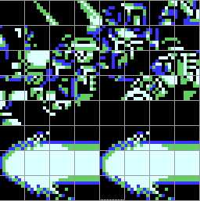
4.人物头像图像数据的导入
人物头像数据的导入比较简单，需要注意的是人物头像分为正片和底片，正片就是所谓的精灵，可以自定义三种颜色，底片就是背景，是固定的白、灰、深灰三色。由于头像正片和底片是相匹配的关系，所以与第三步中所提及的背景武器动画一样的原则，正片和底片在两个图库中的位置要一一对应，如下图所示，阿姆罗的头像正片在第四个位置（一个图库为4个头像正片），相应的头像底片也在第四个位置：
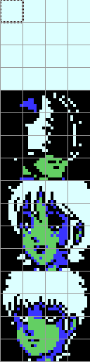
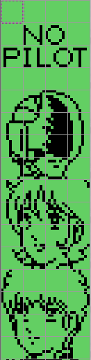
根据这个导入的原则，我们又可以用来解决在第一个步骤遗留下来的问题，就是在机体主体部分贴完之后在空余的部分贴上头像数据（当然前提是能塞得下），如图所示，这样机体主体部分的剩余图块就得到了充分利用。
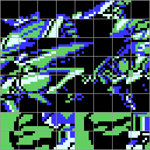
人物头像数据的导入放在第四步起到了见缝插针的作用，将之前导入机体主体部分图像数据时剩余的图像空间也进行了利用，至此，所有头像图像数据也已经导入完毕。
5.小图标图像的导入
小图标全局配置的原则我已经在修改心得-修改难点示例-小图标的配置中进行详细说明，在导入的时候是一个个图库导入的，导入在一个8*8的完整图库中即可。
6.其他图像数据的导入（主要是以更换为主)
6.1地图模块数据：地图模块在原版中为四个，扩容版为五个，更改地图模块只需将2*2的地图模块进行贴图更换，然后更改相应地图模块参数即可。地图模块数据如下图所示，需要注意的是第一个地图模块最好不要更改，是地图边界的图像数据。
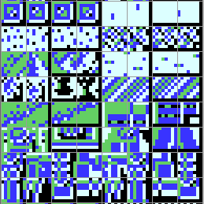
6.2大地图模块数据：大地图模块数据在一共占用三个图库，如图所示，其中地球1占用一个图库，地球2和宇宙共占用两个图库在对大地图的地图模块的时候地球1可以随意更改，不要超过64个图块即可，对于地球2和宇宙地图模块的更改就要综合考虑，两者一共占用两个图像的空间。
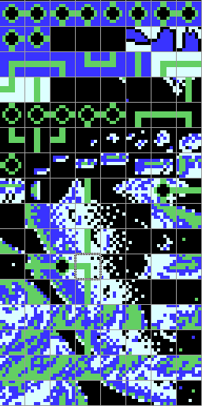
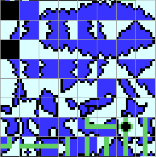
6.3关卡标题图像数据导入：
标题图像即小标题，每关的小标题可用的图库数量为三个，我们可以在最后进行处理，将标题放置在剩余的任意空白处，以达到图像空间的利用率最大化。